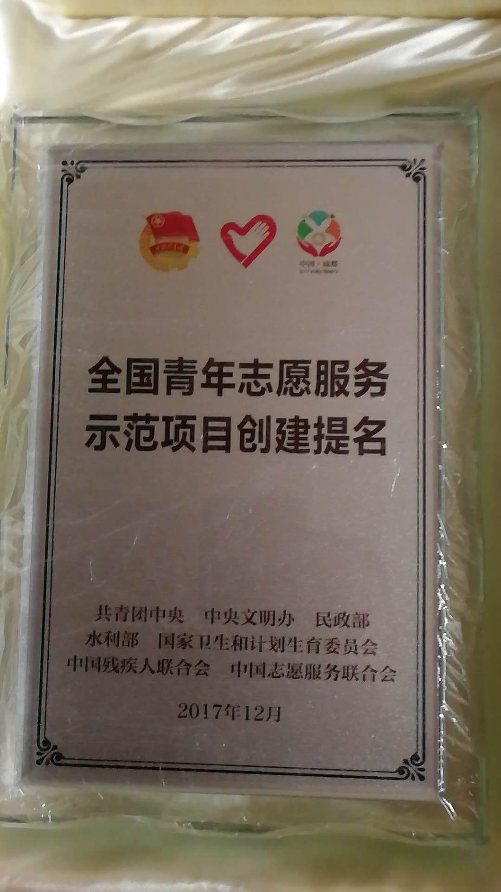
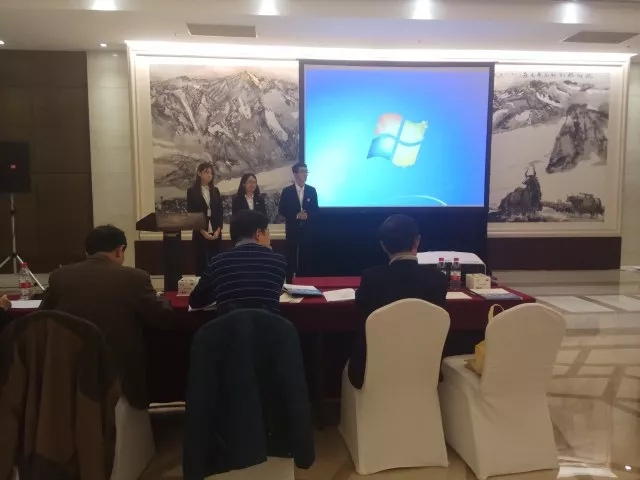

2017年12月3日，第四届中国青年志愿服务项目大赛暨志愿服务交流会在四川成都闭幕。我校“童心圆”留守儿童关爱行动项目荣获全国青年志愿服务示范项目创建提名奖。
 本次赛会以“志愿新时代，共筑中国梦”为主题，由共青团中央、中央文明办、民政部、水利部、国家卫生和计划生育委员会、中国残疾人联合会、中国志愿服务联合会等7个中央有关部委和四川省委省政府、成都市委市政府联合举办。大赛旨在为全国优秀志愿服务组织和项目搭建资源配置、项目展示、组织交流、文化引领的交流平台。
迄今为止，全国共有12000多个项目参加各级志愿服务项目大赛，其中由全国评审委员会评出的金奖项目有300个、银奖项目有1200个。此次评选活动是在往届获奖项目范围内优中选优，用更高标准评出120个在项目发展、服务效果、组织管理、示范导向、社会评价方面均有较大提升的示范性项目，未来的一年里，“童心圆”留守儿童关爱行动项目将在共青团中央、中央文明办、民政部、水利部等七个国家部委共同联合支持培育下开展为期一年的创建工作，通过创建验收后将正式获得“全国青年志愿服务示范项目”荣誉称号，真正领跑全国志愿服务工作，传播志愿服务文化。